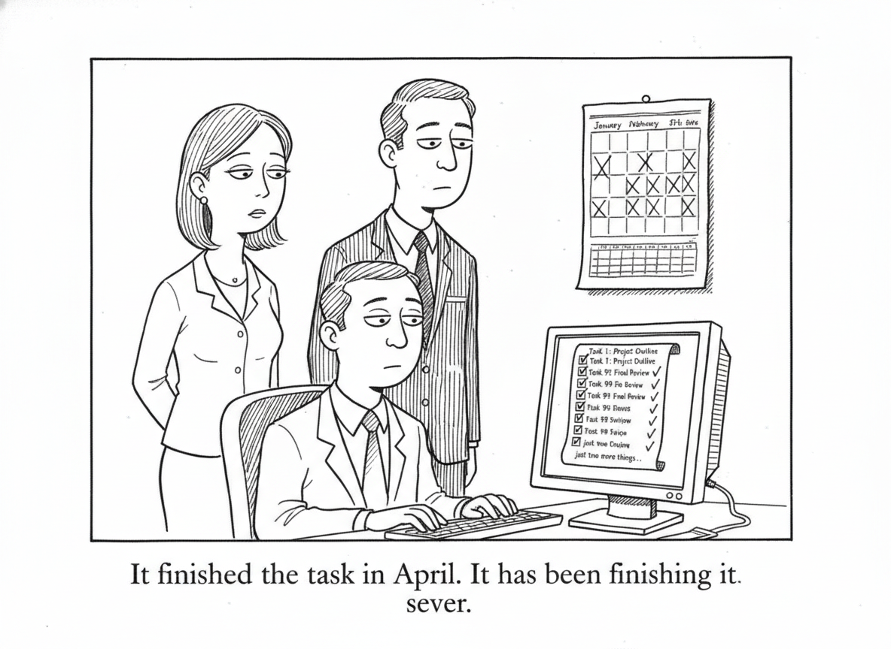

Your daily AI news digest
AI the News That's Fit to Prompt

Opus 5 lands at $5 per million input tokens and $25 per million output tokens, unchanged from Opus 4.8, and Anthropic's claim is that it delivers something close to Claude Fable 5 intelligence at half the price. The benchmark table is unusually lopsided. On Frontier-Bench v0.1 it surpasses every other model and more than doubles Opus 4.8 at a lower cost per task. On CursorBench 3.2 it lands within 0.5 percent of Fable 5's peak at half the cost per task. On ARC-AGI 3 it scores three times the next-best model. On OSWorld 2.0 it beats Fable 5's best result at just over a third of the cost.
The tier improvements are where the agent story lives. New beta features let tools change mid-conversation and let the model fall back automatically to an alternative when a safety classifier intervenes, both of which matter far more to a process that runs for hours than to a chat turn. Life-sciences gains are concrete: 10.2 percentage points over Opus 4.8 on organic chemistry, 7.7 on protein prediction. A Fast mode runs roughly 2.5 times the default speed at double the base price.
Anthropic also publishes the number it did not have to. Opus 5 scores 2.3 on automated behavioral audits, which the company describes as the lowest of recent models, and it still trails Mythos 5 on cybersecurity exploitation tasks. Read that next to Dario Amodei's open-weights essay elsewhere in this issue, which argues that every sufficiently capable model should face mandatory pre-release testing for exactly these categories. The company is making its own case by showing its own scorecard.

"It finished the task in April. It has been finishing it ever since."
Dario Amodei: We Never Asked for a Ban on Open Weights
Amodei writes to correct what he says is a misreading of Anthropic's position: the company has never advocated banning open-weights models, and models without dangerous capabilities provide real public value. His two actual concerns are authoritarian governments outbuilding the US for military or population-control purposes, and powerful models being turned to cyber or biological attack. His prescription is three specific measures rather than a ban. Restrict chip sales to China and pursue smuggling, because limited domestic chip capacity is the binding constraint on Chinese frontier training. Treat industrial-scale distillation as a policy problem, since distillation lets a chip-constrained lab exceed what its silicon should allow. And require every sufficiently capable model, open or closed, to pass safety testing for cyber, bio, and alignment risk before release. He grants parts of the industry's open letter, including the competition and customer-control arguments, but disputes the claim that open models are inherently safer, citing attacker-defender asymmetry in biology. The question, he argues, should be settled by testing rather than assumed in advance.

Cognizant Trains 30,000 Associates on Claude and Embeds It Across Its Platforms
Cognizant becomes a Global Premier Partner in the Claude Partner Network and is wiring Claude into Flowsource, Neuro AI Engineering, and Neuro IT Ops. Flowsource now runs Claude Code alongside human engineers in its Spec-Driven Development module, steered by project specs, coding standards, and architectural blueprints. The client numbers are the interesting part: a customer experience portal for a global manufacturer delivered in six months; an agentic contract-intelligence system for a biopharmaceutical company cutting review time by up to 40 percent while pushing extraction accuracy above 88 percent; a risk-navigation tool that turns hours of underwriter work into minutes and saves roughly eight hours per person per week. Cognizant's CEO frames the whole thing bluntly: "AI capability is rising faster than enterprises can absorb it, and that gap is the defining problem of this moment." Thirty thousand trained associates is one answer to an absorption problem.
Steve Yegge on Why Gas Town Fell Apart: "Just Two More Things"
Simon Willison quotes Steve Yegge on the collapse of Gas Town, a system built to be reusable that in practice only ever built itself. It worked through Opus 4.6 and then came apart at the seams with 4.7. Yegge names the specific behavior that broke it: a "just two more things" tic that kept the model from ever converging on being ready to do real work, so it went on modifying Gas Town instead of finishing anything. Other problems contributed, but that is the one he identifies as the breaking point, and it persisted in the versions that followed. It is a useful counterweight to a benchmark table. A model can be measurably better at nearly everything and still be unusable for a long-running agentic loop because of one convergence habit, and no evaluation suite in this issue reports on that.

Oil at $89.81, Up Nearly 30 Percent Year Over Year
Fortune's daily Brent reading puts crude at $89.81 a barrel, up $2.43 from yesterday's $87.38, up 23.62 percent on the month from $72.65, and up 29.57 percent on the year from $69.31. The piece is a straightforward explainer, noting that crude accounts for more than half the price at the pump and that oil moves shift natural gas demand inversely as industries substitute fuels on relative cost. It matters here for a boring reason. The data centers under construction across this issue run on electricity, and a fuel complex up thirty percent in a year is one of the input costs nobody puts in a benchmark table.
Word Search
Seven terms from today's stories. Click a starting letter, then the ending letter. Words run across, down, and diagonally.
White House Whipsaws Silicon Valley (and Itself) Over A.I. Rules
The Times on Washington reversing itself on AI rules fast enough that the industry cannot plan against it. Paywalled, so this one is a headline and a pointer.
China's AI Blitz Creates 'Death Zone' for Rival US Model Makers
Bloomberg's framing of what a run of aggressively priced, openly released Chinese models does to the middle of the US market. The obvious companion to Amodei's essay above.
Big AI Bets Divide Venture Capital, Leaving Smaller Funds Behind
A Bloomberg feature on the split in venture capital between funds large enough to write AI-scale checks and everyone else.
Huawei's Top Scientist Warns of Chip Limit Nvidia Will Soon Face
Huawei's chief scientist argues Nvidia is approaching a physical ceiling. Worth reading against the chip-supply argument at the center of Anthropic's open-weights position.
NAB Sticks to Safer US AI Models as Chinese Rivals Kept At Bay
National Australia Bank is testing AI agents for customer-facing banking and, per Bloomberg, keeping Chinese models out of the shortlist. Procurement is where the geopolitics actually bites.
CXMT Narrows Gap With SK Hynix and Samsung in Smartphone Memory
China's CXMT is closing on the Korean incumbents in smartphone memory, another datapoint in the domestic-silicon question that export controls are meant to settle.
BlackRock Overweight AI Despite Higher Risks, Li Says
A Bloomberg video segment: BlackRock is staying overweight AI while acknowledging the risk profile has gotten worse, not better.
Apple Briefly Removes Telegram From the App Store Over Abusive Content
Apple pulled Telegram over child abuse content and then restored it. A reminder that platform moderation enforcement still runs on the app store chokepoint.
Chinese Startup AI² Robotics Is Said to Consider Hong Kong IPO
Another Chinese AI company reportedly weighing a Hong Kong listing rather than a US one.
Alibaba-Backed 3D-Modeling Startup Vast Is Said to Weigh HK IPO
Vast, an Alibaba-backed 3D modeling startup, is said to be considering a Hong Kong IPO. Two of these in one day is a pattern, not a coincidence.
MediaTek-Backed African Fintech PalmPay Eyes Hong Kong IPO
PalmPay, backed by MediaTek, is looking at Hong Kong too. The listing venue of choice for anything with a chip company on the cap table right now.
BlackRock Launches Tokenized Money Market Funds in Europe
BlackRock brings tokenized money market funds to Europe, continuing the slow institutional migration of plumbing onto chains.
Apple's India Sales Top $10 Billion on Widening Retail Push
Apple crosses $10 billion in Indian sales as it widens its retail footprint.
Modi Seeks Sweeping Tax Cuts for Electronics Firms, Global Funds
India is courting electronics manufacturing and global capital with broad tax cuts, the supply-chain half of the story above.
BofA: Japan Determined to Break Yen at 155
A Bloomberg video on Bank of America's read that Japan intends to defend the yen at 155. Macro backdrop for every dollar-denominated compute contract in Asia.